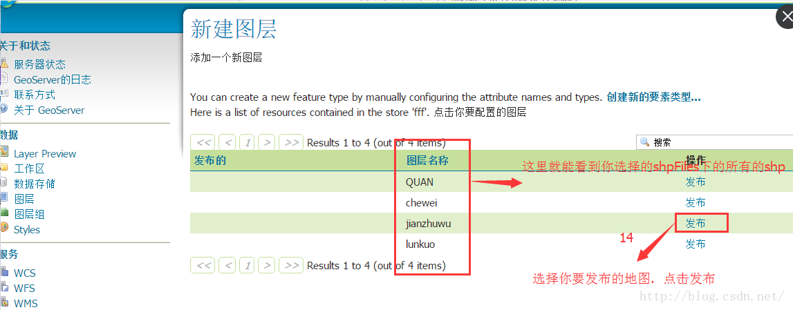
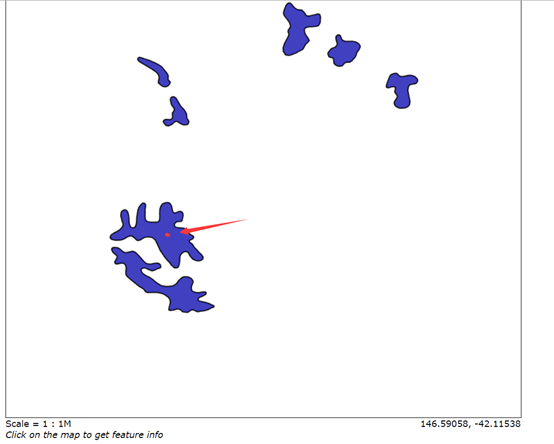

| 分类 | 标准配置 | 推荐配置 |
|---|---|---|
| CPU | 英特尔® 酷睿™i78核16线程 3.5GHz 同等或更高配置 | 英特尔® 酷睿™ i9 10核20线程 3.5GHz 同等或更高配置 |
| GPU* | Nvidia GeForce RTX™ 3060Ti 同等或更高配置 仅支持 Nvidia | Nvidia GeForce RTX™ 3090 同等或更高配置 仅支持 Nvidia |
| 显存 | 8 GB | 24 GB |
| 内存 | 32 GB | 64 GB或以上 |
| 硬盘 | 15 G以上剩余空间 | SSD 40G 或以上 |
| 操作系统 | Windows 10 64位操作系统 | Windows 10 64位操作系统 |
| 网络 | 100M带宽 或以上 | 100M带宽 以上td> |
注意：
需要用对应的软件安装环境：
目前仅支持 windows操作系统
| 环境 | 最低版本要求 | 推荐版本 | 下载地址 |
|---|---|---|---|
| .net framework | 4.6 | 4.6 | https://dotnet.microsoft.com/en-us/download/dotnet-framework/net46 |
| directX | 11 | 11 | https://www.microsoft.com/en-us/download/details.aspx?id=17431 |
| node js | 14.0.0 | 14.20.0 | https://nodejs.org/en/download/ |
| Vue | 2.6 | 2.7.10 | https://vuejs.org/ |
①nodejs
JavaScript中的nodejs的环境很简单，在该系列文中中也会有体现，可以直接在输入框中搜索nodejs,然后点击进去就可以打开nodejs安装教程。
②vue
而vue的环境就更简单了，由于咱们的工程中的代码已经是用vue基础框架来写的。所以您可以不用全局安装，只需要在对应的工程目录中，打开终端： npm install,
①.net directX11
第一步：在Win10桌面界面下，使用【Windows + R】组合快捷键打开运行命令框，然后输入命令【dxdiag】点击确定;
第二步：会弹出一个Directx诊断工具提示，这里直接点击下方的【是】就好了，然后会看到如下信息：
当然，DX12的版本高于11，版本越高，体验就越好哦！！！
②安装DX11
第一步：首先去下载DirectX 11最新版：directx 11|directx11.0|directx11官方版下载
第二步：下载完成后解压并运行安装程序，在出现的欢迎界面中选择“我接受协议”并点击“下一步”；
第三步: 取消勾选“安装Bing工具栏”，在出现的就窗口中直接点击“下一步”，程序开始执行安装程序并拷贝文件到本地硬盘中；
第四步：更新完成后，直接点击“确定”按钮完成DirectX 11的安装。
第五步：安装完成后，建议重新启动电脑，然后在运行里 使用dxdiag命令查看DX11是否安装完成。
如下图，directx版本已经显示为11了。
打开 VS Code 官网，点击下载链接即可下载安装。如果电脑是 Windows 系统，安装完成之后会看到如下的界面。
VSCode 对支中文的支持很好，微软在这一方面还是很良心的。如果界面是英文的，也没有很大的关系，毕竟办法总比问题多，咋们可以安装中文的插件来实现汉化版。
刚下载好的 VSCode 还不符合我们的需求，需要进行配置才能顺手。设置方法也很简单，快捷方式为 CTRL+，，即可呼出设置面板，如下图所示。常见的设置都可以通过这个面板进行调节。
在上面汉化的过程中就已经是安装插件了，但是为了方便大家更加清楚对应的流程，这里来详细聊聊。点击编辑器左边的扩展按钮，即可安装扩展，快捷键是 CTRL+SHIFT+X。只要你把鼠标放在按钮上，你就可以看到了。当然VScode 也提供了搜索功能，输入自己想要安装的插件就行。这里以安装vue的插件（volar）为例:
使用ctrl + shift + x
在输入框中搜索volar
由于nodejs是用于启动一个服务端的，服务都是需要跨平台的，所以安装node的方式又分为 windows平台，linux平台等。本文就以咋们常见的windows平台来描述nodejs 是怎么安装的。
既然需要安装一个程序，那第一步肯定是需要下载该程序的安装包。nodejs的下载安装包的地址是： https://nodejs.org/en/download/,当然官网的下载地址怕有的同学打不开和排斥英文，这里在给一个民间地址： http://nodejs.cn/download/。两者打开都是都是如下界面：
一般来说，nodejs会有两个版本，一个是长期支持的版本，另一个则是最新版本。如果是个人项目的话，个人建议下载最新的版本，来体验最新功能带来的乐趣；但是如果从公司的层面出发，那个人就建议使用长期支持的版本，毕竟公司层面上还是越稳定越好。当然，小孩子才做选择，咋们两个都要，需要怎么做呢？ 如果需要在一台机子上实现做个版本的nodejs,那就需要使用node版本管理工具啦——**nvm**
上图就是nvm的详细情况，可以轻松切换node的版本，学习和加班两不误😁😁😁,对nvm有兴趣的同学请查看:https://github.com/nvm-sh/nvm 回到正题，当打开node下载地址后，根据自己当前的机器选择对应平台的安装包，点击下载即可.为了方便演示，这里就下载一个windows 64位的.msi包
1.点击下载的安装包，然后会拉起node的安装程序
2.点击next进行下一步
3.勾上I accept the terms the License Agreement,然后进行下一步；
4.选择安装的盘符，如果是小白的话，不建议修改。
5.最后点击next就会完成nodejs 的安装啦！！！
在任意地方打开一个终端执行以下操作：
输入node -v后敲回车（enter）会出现node的安装版本如下：
输入npm -v 后敲回车（enter）会出现npm的安装版本如下：
GIS 中使用两种常用的坐标系类型：
全局坐标系或球坐标系，例如经纬度。这些坐标系通常称为_地理坐标系。
基于横轴墨卡托、亚尔勃斯等积或罗宾森等地图投影的投影坐标系，这些地图投影（以及其他多种地图投影模型）提供了各种机制将地球球面的地图投影到二维笛卡尔坐标平面上。投影坐标系有时称为_地图投影_。
地理坐标系 (GCS) 使用三维球面来定义地球上的位置。
在球面系统中，水平线（或东西线）是等纬度线或纬线。垂直线（或南北线）是等经度线或经线。
地心坐标系不是基于地图投影的平面坐标系。它是一种地理坐标系，在此坐标系中，地球在一个从地心开始测量的右旋 XYZ 坐标系（3D 笛卡尔）中被建模为球体或旋转椭球体。
X 轴指向本初子午线、Y 轴位于赤道平面上且与 X 轴成 90°，而 Z 轴则指向北极点。
地心坐标系与基于纬度和经度的地理坐标系类似，均从地球的中心开始测量_角度。
投影坐标系在二维平面中进行定义。与地理坐标系不同，在二维空间范围内，投影坐标系的长度、角度和面积恒定。投影坐标系始终基于地理坐标系，而后者则是基于球体或旋转椭球体的。
在投影坐标系中，通过格网上的 x,y 坐标来标识位置，其原点位于格网中心。每个位置均具有两个值，这两个值是相对于该中心位置的坐标。一个指定其水平位置，另一个指定其垂直位置。这两个值称为 x 坐标和 y 坐标。采用此标记法，原点坐标是 x = 0 和 y = 0。
无论将地球视为球体还是旋转椭球体，都必须变换其三维曲面以创建平面地图图幅。此数学变换通常称作地图投影。
理解地图投影如何改变空间属性的一种简便方法就是观察光穿过地球投射到表面（称为投影曲面）上。想像一下，地球表面是透明的，其上绘有经纬网。用一张纸包裹地球。位于地心处的光会将经纬网投影到一张纸上。现在，可以展开这张纸并将其铺平。纸张上的经纬网形状与地球上的形状不同。地图投影使经纬网发生了变形。
展平旋转椭球体并不比展平橙皮容易，因为它会破裂。用两种尺寸表示地球表面会导致数据的形状、面积、距离或方向发生变形。
地图投影使用数学公式将地球上的球面坐标与平面坐标关联起来。
不同投影会引起不同类型的变形。有些投影旨在最大限度地降低一种或两种数据特性的变形。投影可保持要素面积不变，但会改变其形状。在下图中，极点附近的数据已被拉伸。
最初设计该投影的目的是为了精确显示罗盘方位，为海上航行提供保障，此投影的另一功能是能够精确而清晰地定义所有局部形状。许多 Web 制图站点都使用基于球体的墨卡托投影。球体半径等于WGS 1984长半轴的长度，即 6378137.0 米。
这是一个圆柱投影。经线彼此平行且间距相等。纬线也彼此平行，但离极点越近，其间距越大。不能显示极点。
地理坐标系表面的形状和大小由球体或旋转椭球体定义。尽管地球最适合用旋转椭球体表示，但有时将地球视作球体可使数学计算更为简便。对于小比例尺地图（小于 1:5,000,000）来说，可以将地球假设为球体。采用这种比例尺时，在地图上察觉不出球体与旋转椭球体的区别。但是，为了保证大比例尺地图（比例尺为 1:1,000,000 或更大）的精度，必须使用旋转椭球体表现地球的形状。在这种比例尺中，选择使用球体还是旋转椭球体取决于地图的用途以及数据的精度。
以下是 1984 世界坐标系（WGS 1984 或 WGS84）的旋转椭球体参数：
a = 6378137.0 meters
b = 6356752.31424 meters
1/f = 298.257223563
SRID空间参考标识符 (SRID) 是与特定坐标系、容差和分辨率关联的唯一标识符。
目前有多种公认的标准 SRID，例如欧洲石油测绘组 (EPSG) 定义的 SRID。某些数据库和空间类型（如 PostgreSQL 中的 PostGIS 几何或 SQL Server 中的地理类型）使用预定义的 EPSG 代码子集，只可使用具有这些 SRID 的空间参考。 以下列出常用的坐标系
地理坐标系：GCS_WGS_1984 转成 EPSG: 4326
投影坐标系：WGS_1984_Web_Mercator_Auxiliary_Sphere叫做 EPSG ：3857
安装环境：Windows 10 21H1，系统 5 位数版本为：19043.1052。
1.1首先需要安装 Java 运行时环境(JRE)。GeoServer 需要 Java 8 或 Java 11 环境，由 AdoptOpenJDK Windows 安装程序提供，下载地址：https://adoptopenjdk.net/，我这里选择了 8 版本，点击下方按钮即可下载。
这里是 GeoServer 官网推荐的安装包，也可以到 Oracle 官网下载 JDK。
1.2安装则按默认设置即可，我们可以自定义安装位置（默认位置为C:\Program Files\Eclipse Foundation\jdk-8.0.302.8-hotspot\），我这里设置为了C:\Java\jdk-8.0.302.8-hotspot\。安装好之后会自动添加 Path 环境变量，无需手动设置，我们在命令行输入java-version命令即可验证。
2.1下载 GeoServer 安装包，地址：http://geoserver.org/download/，这里我们选择稳定版，点击【Production】选项卡，然后点击版本号即可跳转到该版本的下载页面。
2.2点击【Platform Independent Binary】选项下载独立的二进制安装包即可。
3.1设置JAVA_HOME环境变量：C:\Java\jdk-8.0.302.8-hotspot，这是安装 JDK 或 JRE 的位置，而Path变量在安装 AdoptOpenJDK 时会被自动添加，也可以将Path变量修改为%JAVA_HOME%\bin；
3.2设置GEOSERVER_HOME环境变量：我这里为C:\geoserver-2.19.2，这是安装 GeoServer 的位置
3.3设置GEOSERVER_DATA_DIR环境变量，默认为：%GEOSERVER_HOME%\data_dir，这是 GeoServer 数据目录的位置。
4.1打开 GeoServer 的bin目录，双击运行startup.bat文件即可，将出现一个命令行窗口并持久存在。此窗口包含诊断和故障排除信息。此窗口必须保持打开状态，否则 GeoServer 将关闭。
4.2打开浏览器输入默认访问地址：http://localhost:8080/geoserver，即可打开 GeoServer Web 管理界面。如下如所示：若打开欢迎页面则表示 GeoServer 已被成功运行。
关闭命令行窗口或运行bin目录下shutdown.bat文件即可。
将 GeoServer 停止运行后删除其安装目录即可。
7.1在打开访问地址：http://localhost:8080/geoserver在页面顶部右侧输入：User name: admin，Password: geoserver，点击【登录】按钮即可。
7.2登录后，欢迎屏幕将更改为显示可用的管理功能。这些主要显示在页面左侧的菜单中。例如点击【Layer Preview】选项。
7.3如下图，单击给定图层的【OpenLayers】选项进行预览，也可以在右上方搜索框搜索图层。
7.4单击列标题可以对图层进行排序
第一步:创建工作区
第二步:编辑工作区 输入工作区名称 输入一个 URI 地址点击提交
工作区是由一个名字和一个名称空间 URI（统一资源标识符）定义。工作区的名称仅限于 10 个字符，不能包含空格。URI 是类似于 URL，除了的 URI 不必指向 Web 上的实际位置，并且只需要一个唯一的标识符。对于工作空间的 URI，建议使用与项目相关联的 URL。例如，http://www.openplans.org/topp是URI为“TOPP”工作区
第三步:创建 store，发布 shp 数据文件夹
shp 文件最好放到这里：
到这里一张地图就发布成功了
最后一点我们发布的是多个 shp 刚才只是发布了一张剩下的需要接着发
点击 openLayers : 看到地图正常显示 表示成功.如果不能正常显示那就去改 SRS 就 OK 了
WFS，即 Web 要素服务，支持对地理要素的插入，更新，删除，检索和发现服务。不同于 WMS（Web 地图服务）的是，该服务专注于要素的地理信息，而忽略其渲染信息，简化了返回信息。 一个图层的 WFS 服务查看方法是在 Layer Preview 页面，选择 WFS 下的 GeoJSON（以 JSON 数据形式展现要素信息，方便解析），查看该图层的要素信息。
解析的参数为：
http://localhost:28080/geoserver/topp/ows?service=WFS&version=1.0.0&request=GetFeature&typeName=topp:states&maxFeatures=50&outputFormat=application%2Fjson
其中各个参数意义可以参照此篇文章：
http://www.cnblogs.com/naaoveGIS/p/5508882.html
这个请求，查询的是此图层的全量数据（返回要素数量受 maxFeatures 参数限制），我们可以添加过滤条件，得到我们想要的数据（非常强大的功能，可以实现非常多的地理查询操作），下面我就以几个空间查询的例子来举例说明一下。
请求方式：
http://localhost:28080/geoserver/sf/ows?service=WFS&version=1.0.0 &request=GetFeature &typeName=sf:bugsites &maxFeatures=50 &outputFormat=application%2Fjson &filter= <Filter xmlns="http://www.opengis.net/ogc" xmlns:gml="http://www.opengis.net/gml"> <Intersects> <PropertyName>the_geom</PropertyName> <gml:Polygon> <gml:outerBoundaryIs> <gml:LinearRing> <gml:coordinates> 604264,4919992 604340,4913350 611059,4915487 604264,4919992 </gml:coordinates> </gml:LinearRing> </gml:outerBoundaryIs> </gml:Polygon> </Intersects> </Filter>`
空间关系
参数说明
A：此次采取的几何方式是 Intersects，即采用面与点相交，得到这个面里面的点数据
B：多边形经纬度为一个数组，第一个点经纬度要与最后一个点一致，保证多边形的闭合
C：过滤条件里有一个 PropertyName 属性，为必须字段，根据图层的属性来查看，具体查看方式为点击图层，然后点及要查询的图层名称，要素类型的第一个属性，即为该字段的值，过程如下图所示
请求方式
空间关系
查询说明：
A：此次采取的几何方式是 Intersects，即采用点与面相交，得到包含这个点的面数据
查询结果：

请求方式：